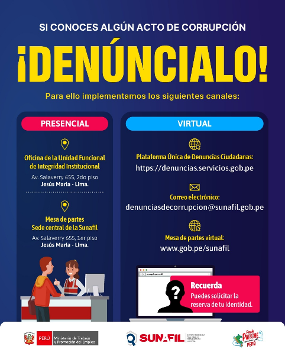
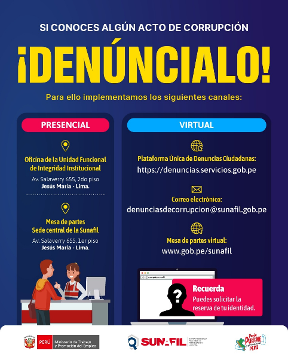

Aspectos Generales de la Organización
1.1. Reseña Histórica de la empresa
La Superintendencia Nacional de Fiscalización Laboral (SUNAFIL) fue creada mediante la Ley N.º 29981 el 15 de enero de 2013, y comenzó a operar oficialmente el 1 de abril de 2014 tras la transferencia de competencias del Ministerio de Trabajo y Promoción del Empleo, aprobada por Resolución Ministerial N.º 037-2014-TR. Esta entidad tiene a su cargo la supervisión del cumplimiento de la normativa laboral a nivel nacional, actuando como Autoridad Central y Ente Rector del Sistema de Inspección del Trabajo, en concordancia con los lineamientos del MTPE. SUNAFIL representa el compromiso del Estado Peruano de garantizar los derechos laborales y fomentar un entorno propicio para la formalización y productividad empresarial.
Para el desempeño de sus funciones, la SUNAFIL desarrolla tres líneas de actuación:
- PROMUEVE los derechos laborales y de seguridad y salud en el trabajo para mejorar las condiciones de empleo de los peruanos, a través de una cultura del cumplimiento.
- SUPERVISA las políticas, los procedimientos y criterios aplicados en la inspección laboral para que sea efectiva, eficiente, transparente y uniforme a nivel nacional.
- FISCALIZA a las empresas y sanciona a aquellas que no cumplen con los derechos de los trabajadores que se encuentran en el régimen laboral de la actividad privada
SUNAFIL busca asegurar el cumplimiento de la normativa sociolaboral a través de un enfoque dual: coercitivo y preventivo. Por un lado, investiga infracciones, exige la restitución de derechos y sanciona a las empresas que incumplen. Sin embargo, su labor se ha centrado mayormente en empresas formales, lo que ha generado críticas. En respuesta, ha comenzado a desarrollar estrategias dirigidas también a sectores informales y vulnerables, apoyándose en nuevas tecnologías como el "Plan Cuadrante Inspectivo" para hacer las inspecciones más eficientes e inteligentes.
Por otro lado, SUNAFIL enfatiza un rol preventivo, buscando generar conciencia entre los empleadores mediante la visibilidad de las inspecciones y acciones educativas como charlas y asesorías. Su objetivo es que la información sea clara, accesible y útil para que empleadores y trabajadores conozcan sus derechos y deberes. En última instancia, se propone fomentar una cultura de cumplimiento basada en la convicción y no en el temor a sanciones, contribuyendo así a una fiscalización laboral más sostenible y efectiva.
Este enfoque preventivo fue reforzado por la Ley Nº 30222, que modificó la Ley de Seguridad y Salud en el Trabajo. Según esta ley, por un periodo de tres años, SUNAFIL debe priorizar acciones de prevención y orientación, antes de iniciar fiscalizaciones. Además, según el Decreto Supremo Nº 010-2014-TR, SUNAFIL debe brindar primero información a los empleadores antes de iniciar operativos de inspección.
1.2. Ubicación geográfica
La Superintendencia Nacional de Fiscalización Laboral (SUNAFIL) cuenta con presencia en diversas regiones del país, a través de sus intendencias regionales que le permiten ejercer sus funciones de fiscalización, orientación y supervisión en materia laboral y de seguridad y salud en el trabajo. Su sede central se encuentra en la ciudad de Lima, en el distrito de Jesús María, en la siguiente dirección:
- Domicilio Legal: Av. Salaverry 655 – Jesús María, Lima, Perú.
En la región de Puno, donde se desarrollará nuestra visita, SUNAFIL opera a través de su Intendencia Regional, ubicada en una zona estratégica de la ciudad de Puno, facilitando la atención a trabajadores, empleadores y ciudadanía en general. Su dirección es la siguiente:
- Intendencia Regional Puno: Jr. 12 de Octubre Nº 267 – Puno, Perú.
Estas ubicaciones permiten a SUNAFIL cumplir de manera efectiva con su misión de promover el cumplimiento de la normativa sociolaboral y garantizar condiciones dignas para los trabajadores a nivel nacional.
1.3. Locales, filiales, Mapa de Lugares Geográficos
Al cierre del año 2024, la Superintendencia Nacional de Fiscalización Laboral (SUNAFIL) contaba con 26 Intendencias Regionales distribuidas estratégicamente en el territorio nacional, cubriendo los 24 departamentos del Perú, así como zonas de alta actividad económica y laboral. Esta red de oficinas permite una supervisión más cercana y efectiva del cumplimiento de la normativa sociolaboral en todo el país.
SUNAFIL ha consolidado su presencia mediante oficinas físicas, así como puntos de atención descentralizados en Plataformas MAC (Mejor Atención al Ciudadano), como en el caso de Juliaca, facilitando el acceso de trabajadores y empleadores a orientación, recepción de denuncias y trámites administrativos.
Esta estructura territorial garantiza un servicio descentralizado, oportuno y eficiente, orientado a la promoción del trabajo decente, la formalización laboral y la protección de los derechos fundamentales de los trabajadores, incluso en zonas de difícil acceso o con alto índice de informalidad.
1.4. Logo (análisis, significado, etc)
Análisis y significado del logotipo de SUNAFIL
El logotipo de SUNAFIL fue concebido para reflejar la evolución de la institución desde su creación hasta convertirse en un organismo moderno, sólido y confiable, con una fuerte presencia a nivel nacional. Su diseño responde a la necesidad de consolidar la marca SUNAFIL como un referente en la fiscalización del trabajo, comprometida con promover una cultura de cumplimiento, luchar contra la informalidad y garantizar condiciones dignas de seguridad y salud laboral.
Concepto y simbolismo
- La tuerca, asociada al sector industrial y al esfuerzo constante por mejorar. Representa la mística del trabajo bien hecho y la necesidad de ajustar y perfeccionar los procesos laborales.
- La lupa, símbolo universal de inspección, análisis y detalle, que refleja el rol fiscalizador de SUNAFIL y su compromiso con una supervisión rigurosa y técnica.
Ambos elementos se integran en un símbolo único que sugiere una lupa enfocada sobre un documento, evocando el trabajo minucioso y técnico que realiza la institución. Este símbolo transmite dinamismo, enfoque y responsabilidad.
Tipografía y estructura
El ideograma "SUNAFIL" utiliza una tipografía modificada de la familia Franklin Gothic Demi Cond, adaptada para proyectar firmeza, autoridad y presencia. Su diseño permite una lectura clara e inmediata, y sus cortes angulados transmiten decisión y rectitud.
Destaca la letra "A", trabajada de manera sutil como "presente y ausente", sugiriendo que SUNAFIL, aunque no siempre visible en el espacio físico de trabajo, está activa y puede intervenir en cualquier momento. Además, la composición evoca la estructura de la bandera peruana, reforzando la identidad nacional.
Versiones del logotipo
- Logotipo oficial: Utilizado en piezas institucionales y formales. Siempre incluye el nombre completo de la institución y prescinde de eslogan.
- Logotipo publicitario: Usado para campañas y piezas comunicacionales. No incluye el nombre oficial completo, permitiendo una mayor flexibilidad visual.
Colores institucionales
La paleta cromática se compone de los colores azul, rojo y grises, que proyectan confianza, energía y equilibrio. El azul, como color emblemático, domina las aplicaciones por su asociación con la seriedad y profesionalismo. El rojo aporta dinamismo y fuerza, mientras que los grises se emplean como acento. El blanco, aunque no se considera un color primario, cumple un rol esencial como fondo y soporte visual del conjunto.
1.5. Número de trabajadores
A fines de 2024, SUNAFIL contaba con 855 inspectores operativos a nivel nacional, tras sumar 86 nuevos fiscales durante el año. Además, la institución convocó 81 plazas para supervisores e incorporó personal administrativo (vía contratos CAS y promoción interna), estimándose un total de entre 200 y 400 colaboradores de soporte. En la sede Puno solo se cuenta con un número limitado de inspectores, siendo solo 4. Por lo tanto, el equipo completo de SUNAFIL durante ese periodo estaría conformado por aproximadamente 1 000 a 1 300 personas, distribuidas entre Lima y las 26 intendencias regionales.
1.6. Razón social y jurídica
- Denominación: SUPERINTENDENCIA NACIONAL DE FISCALIZACION LABORAL - SUNAFIL
- Nombre comercial: SUNAFIL
- Tipo de Empresa: Instituciones Publicas
- Domicilio legal: Av. Salaverry 655 (Piso 2 - Ministerio de Trabajo) – Jesús María, Lima, Perú
- Objeto social: Supervisar y fiscalizar el cumplimiento de la normativa sociolaboral y de seguridad y salud en el trabajo, así como orientar y promover la formalización laboral.
- Propiedad y forma jurídica: Organismo técnico especializado adscrito al Ministerio de Trabajo y Promoción del Empleo (MTPE), con personería jurídica de derecho público interno.
- RUC: 20555195444
- Teléfono de atención: (01) 390-2800
1.7. Mercado que abastece
La población a la que está dirigida la labor de SUNAFIL incluye a los trabajadores contratados bajo el régimen laboral de la actividad privada, tanto del sector público como del privado, a todos los empleadores del país, y a la Población en Edad de Trabajar (PET), es decir, aquellas personas que tienen la edad suficiente para realizar actividades laborales o productivas.
| Población objetivo | Descripción | Referencia | Cantidad | Fuente |
|---|---|---|---|---|
| Trabajadores contratados bajo el régimen laboral de la actividad privada en el sector público | Corresponde a todas y todos los trabajadores bajo el régimen laboral privado que se encuentren en el sector público. | Literal i) Art. 6 del ROF integrado de la SUNAFIL | 169,039 | SERVIR Informe sobre las Características del servicio civil 2022 |
| Trabajadores Dependientes y Autónomos en la Actividad Privada (*) | Lo comprende a las y los trabajadores dependientes y autónomos en la actividad privada asociados a las empresas que declaran en la planilla electrónica (PLAME). | Literal i) Art. 6 del ROF integrado de la SUNAFIL | 5,744,589 | INEI – ENAHO 2023 |
| Empleadores potencialmente fiscalizables (**) | Corresponde a los empleadores que han declarado trabajadores en la planilla electrónica (PLAME) | Art. 4 de la Ley General De Inspección del
Trabajo. Art. 32 de la Ley General De Inspección del Trabajo |
373,181 | PLAME 2023 |
| Población en Edad de Trabajar | Comprende a la población apta para ejercer actividades productivas (a partir de los 14 años). | Literal f) Art. 54 del ROF integrado de la
SUNAFIL. Art 3. de la Ley General de Inspección del Trabajo |
25,989,308 | INEI – ENAHO 2023 |
1.8. Principales proveedores
La gestión de proveedores en la Superintendencia Nacional de Fiscalización Laboral (SUNAFIL) está orientada a garantizar eficiencia operativa, cumplimiento normativo y transparencia en la contratación pública. SUNAFIL trabaja conforme al marco del Sistema Nacional de Abastecimiento y realiza sus adquisiciones principalmente a través de SEACE (Sistema Electrónico de Contrataciones del Estado).
Principales tipos de proveedores:
- Proveedores de bienes y servicios generales: Suministran materiales de oficina, mobiliario, mantenimiento, transporte, entre otros recursos operativos necesarios para el funcionamiento diario de las sedes a nivel nacional.
- Proveedores tecnológicos: Empresas encargadas del desarrollo, mantenimiento y soporte de sistemas informáticos clave como el SIIT, SINEL, Expediente Electrónico, así como servicios de hosting, servidores, telecomunicaciones y ciberseguridad. Entre los proveedores frecuentes se encuentran compañías locales especializadas en soluciones para entidades públicas y contratistas del Estado registrados en OSCE.
- Proveedores especializados en formación y consultoría: Instituciones y consultoras que brindan capacitaciones a inspectores laborales, asesoría jurídica y técnica, así como desarrollo de políticas internas y soporte normativo.
- Proveedores de sistemas intergubernamentales: SUNAFIL opera con sistemas estatales como el SIAF, SIGA y SIPP, cuyos responsables (MEF y CEPLAN) actúan como proveedores estratégicos de plataformas transversales en la gestión pública.
- Proveedores responsables y fiscalmente cumplidos: La entidad realiza procesos de verificación que incluyen la vigencia de RUC, cumplimiento tributario y registros vigentes en OSCE. Se prioriza la contratación de proveedores que respeten estándares de legalidad y ética.
1.9. Productos y servicios ofrecidos
SUNAFIL se encarga de promover, supervisar y fiscalizar el cumplimiento del ordenamiento jurídico sociolaboral y de seguridad y salud en el trabajo. Los servicios que atiende SUNAFIL se presentan a continuación:
1.9.1. Orientación en materia sociolaboral y seguridad y salud en el trabajo eficaz para las y los trabajadores y empleadores:
Acciones de carácter instructivo general dirigidas a los empleadores y las y los trabajadores, sobre el rol de la Inspección del Trabajo y los alcances del ordenamiento normativo sociolaboral y de seguridad y salud en el trabajo, las cuales inducen al cumplimiento de la normativa.
1.9.2. Asistencia técnica en materia sociolaboral y seguridad y salud en el trabajo oportuno a los empleadores:
Acciones especializadas dirigidas a los empleadores con perfil de riesgo, que consisten en la visita al centro de trabajo, con el fin de brindar recomendaciones de subsanación o corrección oportunas frente a posibles incumplimientos de las normas sociolaborales y de seguridad y salud en el trabajo.
1.9.3. Espacios de diálogo laboral continuo para los gremios empresariales y organizaciones sindicales:
Espacios bipartitos de interacción y diálogo que favorecen la participación de las organizaciones sindicales y gremios empresariales, quienes a través de sus propuestas impulsan el fortalecimiento del Sistema de Inspección del Trabajo.
1.9.4. Atención de consultas laborales oportuna a la población en general:
Solicitudes verbales o escritas realizadas por las y los ciudadanos, con el fin de obtener respuesta especializada y en el más breve plazo, en materia sociolaboral, seguridad y salud en el trabajo y del sistema de inspección del trabajo.
1.9.5. Promoción en materia sociolaboral y seguridad y salud en el trabajo continúa dirigida a la población en edad de trabajar:
Acciones que transmiten mensajes generales, acerca de los aspectos básicos de una materia previamente definida, con el objeto de que el público objetivo sea más consciente de los alcances de la normativa vigente, así como de los problemas sociales que esas normas buscan solucionar. Al respecto, su propósito es afectar o generar un sentimiento de interés frente a las materias previamente escogidas.
1.9.6. Atención de denuncias laborales a través del módulo de Gestión de Cumplimiento de manera oportuna en favor de las y los trabajadores y extrabajadores:
El servicio de atención de denuncias laborales a través del módulo de Gestión de Cumplimiento (MGC) está orientado a gestionar de manera eficiente las denuncias de las y los trabajadores y extrabajadores, verificando el cumplimiento de obligaciones sociolaborales y de seguridad y salud en el trabajo por parte de los empleadores. A través de este mecanismo, se busca resolver de forma rápida y oportuna las denuncias relacionadas con materias subsanables, como la entrega de boletas de pago, certificados de trabajo, beneficios sociales y condiciones de seguridad laboral, garantizando la protección de los derechos de las y los denunciantes sin necesidad de llegar a una inspección física, siempre que la o el empleador cumpla con subsanar las irregularidades detectadas.
El MGC utiliza cartas disuasivas para lograr el cumplimiento de las obligaciones laborales dentro de los plazos establecidos, beneficiando tanto a las y los trabajadores como a los empleadores.
El atributo "oportuna" en el servicio de atención de denuncias laborales a través del Módulo de Gestión de Cumplimiento (MGC) se justifica por la implementación de plazos establecidos y cortos para cada etapa del proceso, asegurando que las denuncias de las y los trabajadores y extrabajadores sean atendidas con rapidez y eficiencia.
1.9.7. Fiscalización documental efectiva dirigida a los empleadores:
El servicio de fiscalización documental efectiva dirigida a los empleadores está diseñado para verificar el cumplimiento de las obligaciones sociolaborales y de seguridad y salud en el trabajo mediante la revisión de documentación enviada por las empresas seleccionadas. Este servicio se dirige especialmente a empresas identificadas con un alto riesgo de incumplimiento laboral. A través de la emisión de cartas, se busca promover el cumplimiento normativo, sin necesidad de realizar una inspección presencial en las instalaciones de la empresa.
El atributo "efectiva" en el servicio de fiscalización documental se justifica por el uso estratégico de herramientas tecnológicas y metodologías preventivas que garantizan la optimización de los recursos y tiempos. Este servicio se caracteriza por su enfoque en empresas de alto riesgo y su capacidad para detectar incumplimientos mediante la revisión de documentación, logrando un alto porcentaje de correcciones voluntarias antes de que sea necesario realizar una inspección física.
1.9.8. Actuación inspectiva de fiscalización oportuna dirigida a empleadores:
El servicio de actuación inspectiva de fiscalización oportuna dirigida a empleadores consiste en la realización de actuaciones inspectivas, que son diligencias previas al procedimiento administrativo sancionador llevadas a cabo por el personal inspectivo. Estas inspecciones buscan verificar el cumplimiento de normativas sociolaborales y de seguridad y salud en el trabajo, y se originan por denuncias y operativos. Se pueden llevar a cabo de forma presencial o virtual, y abarcan la verificación de hechos, la recopilación de pruebas y la emisión de informes y actas que determinan posibles infracciones, permitiendo la adopción de medidas correctivas para garantizar el cumplimiento de las normativas.
El atributo "oportuna" en la actuación inspectiva de fiscalización oportuna dirigida a empleadores se justifica por los plazos establecidos en la normativa. Esto garantiza una intervención rápida y eficaz para corregir las irregularidades detectadas, protegiendo a las y los trabajadores de manera inmediata y asegurando que los empleadores cumplan con las normativas a tiempo.
1.9.9. Procedimiento administrativo sancionador oportuno dirigido a los empleadores:
El servicio denominado procedimiento administrativo sancionador oportuno dirigido a los empleadores está diseñado para garantizar que las infracciones en materia sociolaboral y de seguridad y salud en el trabajo, cometidas por los empleadores, sean investigadas y sancionadas dentro de los plazos establecidos por la normativa. Este procedimiento es realizado por la Autoridad Instructora tras la identificación de infracciones, y su desarrollo incluye la notificación formal al empleador, la evaluación de descargos y la emisión de una resolución por parte de la Autoridad Sancionadora, quien tiene la potestad de imponer sanciones o archivar el procedimiento. El procedimiento está dirigido principalmente a los empleadores que han incumplido la normativa sociolaboral o la seguridad y salud en el trabajo.
El atributo "oportuno" en el servicio de procedimiento administrativo sancionador se justifica por la necesidad de no exceder los plazos procesales establecidos en el Texto Único Ordenado de la Ley del Procedimiento Administrativo General y la normativa conexa. Estos plazos garantizan que los procedimientos no se dilaten injustificadamente.
1.9.10. Gestión de cobranza eficaz de empleadores:
Este servicio consiste en planear, controlar y ejecutar el procedimiento de la cobranza de las multas derivadas de las sanciones impuestas por las autoridades sancionadoras de la entidad.
1.11. Afiches y página web de la empresa (publicidad)
 

.jpeg)
.jpeg)
.jpeg)